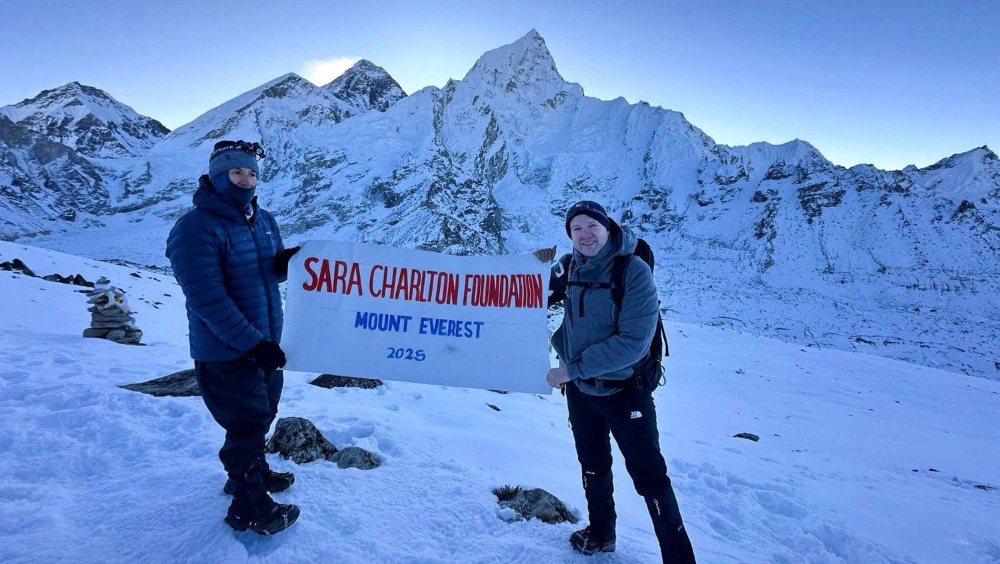

In memory of Sara Charlton
The Sara Charlton Foundation is a grant-making charity, set up in 2011 in Sara's memory. We fund the frontline of the fight against domestic abuse across the UK — the advisors who protect those at the highest risk, and the prevention workers breaking the cycle for the next generation.
Sara's story
Sara Charlton · born 31 January 1957
Sara dedicated her life to helping people society had left behind. From a young age she volunteered — working with families at Children North East, then with Gingerbread, supporting single parents. In 1992 she co-founded "Time Out," a non-profit providing childcare to her community, and in 2001 a second, Low Fell Link. Over the years, more than 500 children passed through her care, and she helped hundreds of people back into work.
The Foundation carries on her work: funding the services that help women and children living with domestic abuse find safety and a way forward.
What we do
We are one of the few charities that gives solely and directly to the services helping women and children who are victims of abuse — matching donors to vetted, on-the-ground organisations across the UK.
Funding Independent Domestic Violence Advisors (IDVAs) who support the highest-risk victims and work directly with police, social services and the courts.
Backing prevention work that teaches 12–18 year-olds about healthy relationships, to break the cycle of abuse before it starts.
Helping those living in fear of domestic and honour-based violence find safety, independence and a future of their own.
Who we fund
We fund IDVAs and prevention workers through grassroots organisations doing the hardest work — refuge, advocacy, counselling and recovery. Organisations we have supported include:
Holistic support for domestic abuse survivors in Middlesbrough — advocacy, counselling and legal assistance, with over 20 years' experience.
Refuge, community support and specialised services in Leicester, with a focus on ethnic minorities and post-refuge resettlement.
Northumberland Domestic Abuse Services — confidential, tailored support that empowers survivors and educates communities.
Support for women and children affected by domestic abuse and sexual violence in Redcar & Cleveland — counselling, housing and legal help.
Wearside Women in Need — a specialist domestic abuse service providing direct services, training and community events across Wearside.
Advice, support and therapeutic counselling in Kent, alongside educational programmes promoting healthy relationships.
The largest domestic abuse organisation in the UK, supporting thousands of women and children every day as they escape abuse and rebuild their lives free from fear.
The go-to service supporting abused women in the Jewish community, combining direct support with outreach, education and prevention work.
Specialist, trauma-informed services for adult survivors of rape, sexual assault and child sexual abuse — safe spaces to heal, rebuild and thrive.
A community-based women's centre providing responsive, trauma-informed support to help local women build a safe and hopeful future.
We have also funded Women's Aid London, Her Centre, DASH (Domestic Abuse Stops Here) and Resolute.
"We are proud to support this charity in recognition of the challenges the Jewish community has faced and to reaffirm our opposition to antisemitism in all its forms."
— The Sara Charlton Foundation
Funds from Leonard's climb will support an Independent Domestic Violence Advocate (IDVA) post at Jewish Women's Aid, the only UK charity supporting Jewish women and children affected by domestic abuse and sexual violence. The advocate works directly with women at the highest risk, providing safety planning, practical support and advocacy at the most dangerous points in their lives.
We are so grateful to Leonard for choosing Jewish Women's Aid to benefit from his extraordinary effort and generosity. His allyship means a great deal to us, and to the women and children whose lives his fundraising will help to change.— Sam Clifford, Chief Executive, Jewish Women's Aid
Understanding abuse
Domestic abuse is any pattern of controlling, coercive or threatening behaviour, violence or abuse between people aged 16 or over who are, or have been, intimate partners or family members — regardless of gender or sexuality. It can be psychological, physical, sexual, financial or emotional. Abusers come from every walk of life.
In many cases children suffer as much as women. At least 750,000 children a year witness domestic abuse, and in around half of cases the children are being directly abused themselves. Nearly three-quarters of children on the 'at risk' register live in households where domestic violence occurs.
Honour-based violence is a crime committed to protect or defend the so-called "honour" of a family or community. Framed in terms of culture, religion or identity, it is used to justify violence — overwhelmingly against women and children — when someone is seen to step outside a prescribed set of behaviours. The Foundation funds services that support these victims too.
Law reform
With Paladin and Women's Aid, the Foundation campaigned for a law that recognises domestic abuse for what it is — not isolated incidents, but a pattern of fear, control and psychological harm.
On 18 December 2014 the government announced a new offence of coercive and controlling behaviour. On 3 March 2015 it became part of the Serious Crime Act 2015.
As victims so often say, "the violence isn't the worst part." The law now reflects that — and it is saving lives.
Some of the most dangerous cases happen when domestic violence and coercive control occur together. Early identification is vital to saving lives.— from the Foundation's law reform campaign
Our film
Made with award-winning director Zak Razvi and Knucklehead, our film sets a Christmas of emotional pain, physical abuse and fear to a dark retelling of "The Twelve Days of Christmas" — a reminder that two women a week are killed as a result of domestic violence, and many of them are mothers.
The climb
To raise funds for the Foundation, Leonard Charlton — Sara's son — trekked beyond Everest Base Camp to Kala Patthar, one of the toughest high-altitude challenges there is, in memory of his mother.
Funds go directly to financing the Independent Domestic Violence Advocates (IDVAs) at the heart of the Foundation's work. Each advocate supports 65–70 survivors a year.
Live figure from the GoFundMe campaign — confirm before launch.

Get involved
Every contribution helps fund frontline support for victims of domestic and honour-based violence. Here's how you and your organisation can get behind the cause.
Host your own event, take on a challenge, or rally your community. We'll help you plan and promote it.
Nominate us as your Charity of the Year, sponsor an event, or fund an IDVA or prevention worker directly.
We're always looking for passionate people to help with events and raise the Foundation's profile.
For organisations
We accept applications for two programmes only — Independent Domestic Violence Advisors (IDVAs) and Prevention Workers. We give priority to applications where joint funding is secured.
Request an application packSupport our work
Charities tackling domestic abuse are woefully underfunded. Your gift goes directly to the frontline services helping women and children rebuild their lives.
Contact
We aim to respond to every enquiry as quickly as we can — whether you want to fundraise, partner, apply for funding, or simply learn more.
Sara Charlton Foundation
Fensmar, 37 Grange Road
Tyne and Wear, NE10 8UU
Last updated: June 2026
The Sara Charlton Foundation (registered charity no. 1139056) is committed to protecting your privacy. This policy explains what information we collect through this website and how we use it.
The data controller is the Sara Charlton Foundation, Fensmar, 37 Grange Road, Tyne and Wear, NE10 8UU. For any privacy question, email info@saracharlton.org.uk.
This website does not collect personal information through forms. If you email us, we hold your message and contact details only for as long as needed to respond. Donations are handled securely by JustGiving; we never see or store your card details.
We use a small number of third-party services that may set cookies or process limited data, such as embedded video and web fonts. See our Cookie Policy for detail.
You have the right to ask what personal data we hold about you, to have it corrected or deleted, and to object to its use. Contact us at the email above. You also have the right to complain to the Information Commissioner’s Office (ico.org.uk).
We keep email correspondence only as long as necessary to deal with your enquiry and to meet any legal obligations.
We may update this policy from time to time; the current version will always appear here.
Last updated: June 2026
Cookies are small files stored on your device that help websites work and understand how they are used.
This site does not set any first-party tracking cookies of its own.
You can accept or decline via the banner shown on your first visit, and you can block or delete cookies at any time in your browser settings. Blocking third-party cookies will not stop the rest of the site working.